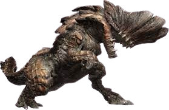
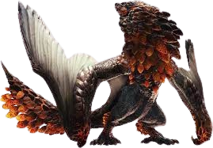
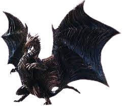

| Monster | Information |
|---|---|
|  | Name: Barroth Classification: Brute Wyvern Dangers: Hard Head - Most attacks bounce straight off of this monster's head Drenched in Mud - Attacks will deal less damage to parts covered in mud, and some attacks will fling muck at you Devastating Charge - This monster has a charge attack that will cover a long distance |
|  | Name: Bazlegeuse Classification: Flying Wyvern Dangers: Death from Above - Often divebombs into ongoing fights between either monsters or monsters and hunters Explosive Assault - Many attacks leave small bombs behind that detonate shortly after being hit Volatile Fury - When angered the bombs will explode shortly after landing instead of being hit |
|  | Name: Kushala Daora Classification: Elder Dragon Dangers: The Steel Dragon - Poorly aimed attacks on this monster will bounce straight off of it's hide Lord of the Tempest - This monster has the ability to control wind, and those who get to close will be blasted away Seasonal Winds - This monster's attacks may have different effects depending on what environment it's in |